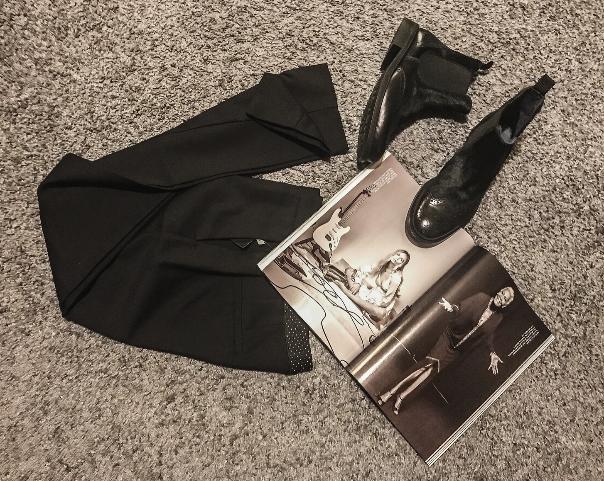

I hate when it's more than 25°C. Maybe because I'm like an onion or like a cake- I love layers...
There is nothing better for me than a beautiful jacket with a top/shirt/whatever. The outfit looks more complex and even more sophisticated if you only want it to. Also, I feel more confident and safer. Simply because I'm prepared!
In't hate summer! There are few things that I actually like about it... Like that you don't have to spend half of an hour just because you have to go to the corner shop because you forgot to buy some butter. In summer it's absolutely amazing! You don't even have to have makeup, because you have those huge sunglasses!
The problem is I don't like summer clothes. They just simply don't talk to me. Winter coat- stand-up comedian. Summer dress- monk. That is why my best summer was in England. No, it wasn't raining all the time. And if it was raining that was the highlight of the day, because after that air was absolutely amazing and I was actually able to breathe.
And every year I promise myself that this time I'll have nice and brown legs. I'm 24 and it never happened. I got sun burn in some ridiculous spot on my body, like thighs, so I can't sit for a month or I'm not tanned at all. I tried using tights in spray, but I look like an Oompa Looompa (from Willy Wonka & the Chocolate Factory- 1971).
Fortunately, there is one thing that I absolutely love about summer: Autumn-Winter sales. As you might noticed in my previous post. And here comes the update about me not buying stuff...
So I basically suck at saving...
But let’s get back to the topic: Dior. I’m so happy that the exhibition was in Paris -where everything began. The House of Dior launched its first spring/summer collection in 1947 and the first Dior perfume -Miss Dior (btw named after Christian’s sister).
The history of Dior is absolutely terrific, just check the article Vogue.uk about Christian Dior and his company.
No filter on the photo, I just like vivid colours in my closet.